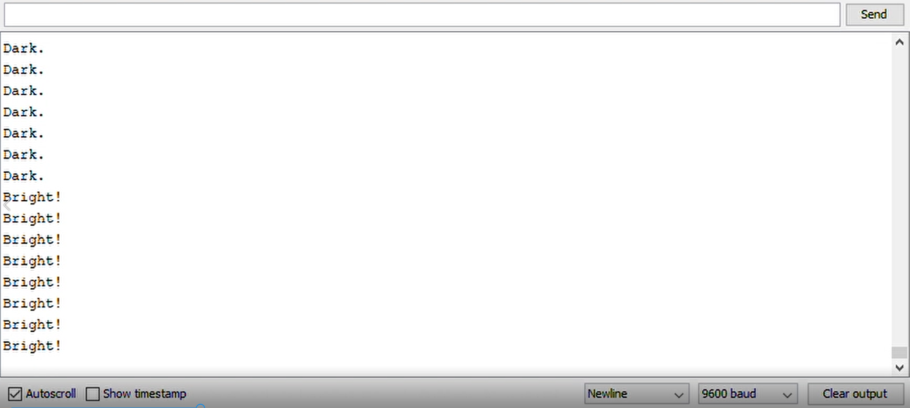
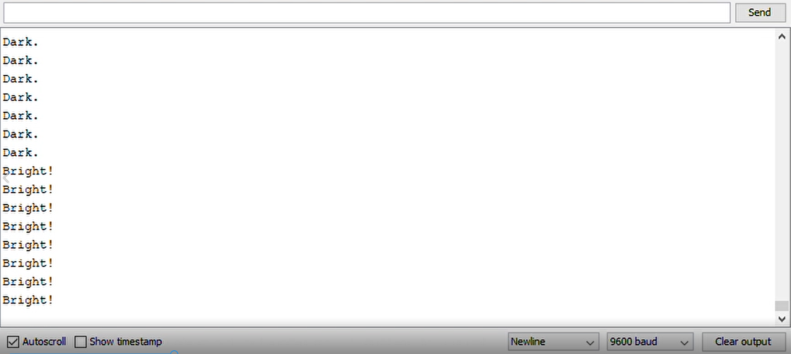

A3: Input Output!

RGB sans G.
RGB sans G.
To make sure the blue and red light would be of similar brightness, I wanted a similar amount of current to flow through them.
The voltage drop across a red LED is 1.8V, and the pin supplies 5V.
5V - 1.8V = 3.2V
I wanted to run it at 20mA of current, which is 0.02A
So with V = IR (ohm's law):
3.2V = 0.02A * R
R = 160Ω (or more)
I opted to use a 220 ohm resistor for the red LED because that's the closest
stock resistor in the kit greater than 160Ω.
So to get a similar amount of current through the blue light, I calculated how much current goes through the red LED with a 220Ω resistor:
V = IR -> I = V/R
I = 3.2V / 220Ω = 0.0145A = 14.5mA
And then I used ohm's law to calculate an appropriate resistance for the blue light:
The voltage drop across a blue LED is 3.3V, and the pin supplies 5V.
R = V/I = (5V - 3.3V) / 0.0145A = 117.25Ω
With this calculated resistance, I opted to use one 100Ω resistor and one 10Ω resistor in series for an equivalent resistence of 110Ω.
Close enough, I figured.
As for the values I expected to read at the voltage divider, I did the following:
Used a multimeter and aligator clips to measure the resistance of the photoresistor when covered with my hand and also when I shined a flashlight on it.
I read 19.5kΩ covered and 600Ω with the light shining.
Using the voltage divider equation, Vout = Vin(R2/(R1+R2)) and a 10kΩ resistor,
The expected Vout for the covered photoresistor is 5V * (10kΩ/(600Ω + 10kΩ)) = 4.716V
The expected Vout for the light-shine photoresistor is 5V * (10kΩ/(19.5kΩ + 10kΩ)) = 1.695V
When I read values off the serial monitor from my circuit, I was reading around 625 when I didn't do anything to the photoresistor (ambient light in my room),
and read around 100 when I shined a flashlight on the photoresistor.
Knowing that the readout gives values between 0 and 1023 and that the Arduino supplies 5V, each analog unit is ~0.005V (5V/1023),
100 from the readout equates to around 0.5V and 625 from the readout equates to around 3.125V.
This makes sense given my previously calculated range of voltage drops (from shining the light to covering the photoresistor with my hand).
Pin A0 is connected between the photoresistor and the 10kΩ resistor.
Pins 10 and 11 are connected to the blue and red channels of the RGB LED, respectively
The light channels are in series with their respective resistors, which I calculated beneath the schematic above.
// Pin 10 to control the blue part of the rgb led
int blue = 10;
// Pin 11 to control the red part of the rgb led
int red = 11;
// Setup code
void setup() {
// Initializing serial for the sensor
Serial.begin(9600);
// Setting blue pin (10) to output
pinMode(blue, OUTPUT);
// Setting red pin (11) to output
pinMode(red, OUTPUT);
}
// Loop code to go on forever
void loop() {
// Reading input of photoresistor on analog pin A0
int sensorValue = analogRead(A0);
// Delaying 50 ms between reads so it doesn't go nuts
delay(50);
// Mapping the range of photoresistor values (100 - 625) to rgb values (-255 - 255)
// Mapping range starts at -255 because at a value below 0 I want the light to change to blue
// aka the darker the room gets the brighter the LED shines blue
// and the brighter the room gets the brighter the LED shines red
// For the max/min of the photoresistor values I just pulled from the serial monitor when I was in my room and shined a flashlight on them
int brightness = map(sensorValue, 100, 625, -255, 255);
// Conditional for setting the light colors
// if the photoresistor senses brightness
if (brightness > 0) {
// Sets the pin of the red part of LED to the mapped brightness value
analogWrite(red, brightness);
// Sets the pin of the blue part of LED to 0
// (or else rgb LED will turn pink/purple after a few cycles)
analogWrite(blue, 0);
// Writing to serial monitor that the photoresistor senses brightness
Serial.println("Bright!");
}
// if the photoresistor senses darkness
else if (brightness < 0) {
// Sets the pin of the blue part of LED to the mapped brightness value
analogWrite(blue, -brightness);
// Sets the pin of the red part of LED to 0
// (or else rgb LED will turn pink/purple after a few cycles)
analogWrite(red, 0);
// Writing to serial monitor that the photoresistor senses darkness
Serial.println("Dark.");
}
// if the photoresistor is perfectly in the light/dark middle
// the LED turns off
else {
// Sets the pin of the red part of LED to 0
analogWrite(red, 0);
// Sets the pin of the blue part of LED to 0
analogWrite(blue, 0);
}
}
 

The light is blue and shines more brightly in relative darkness, and then turns red and shines more brightly in relative brightness.
A screenshot of serial monitor output above marks a change in output when the light color changes.